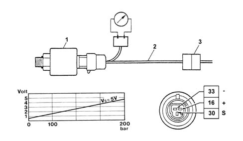

1058AA METHANE PRESSURE SENSOR OPERATION CHECK
- Path
- Test > 10 ENGINE > 1058 GAS CIRCUIT > 1058A GAS CIRCUIT MULTI POINT INJECTION > 1058AA METHANE PRESSURE SENSOR OPERATION CHECK
- Kind
- test / check procedure
- Applies to
- engines: 2.0 16V; all production periods; only with equipment: BIPOWER
- Interactive page
- https://sloeber94.github.io/elrnDB-fDct/en/#/244000555
Applies to: engines: 2.0 16V; all production periods; only with equipment: BIPOWER
The electrical check is carried out by placing a bridge (2) to be constructed in situ (not supplied as spares) between the sensor (1) and the connector (3) in order to supply the sensor and receive the output signal using a multimeter (voltmeter).

Place the bridge between the sensor and the connector.
With the ignition switched on, check that the sensor supply is about 5 Volt.
Check that the output voltage is between 0.5 V (with the tank full) and 4.5 Vwith the canisters completely full at a pressure of 200 bar.